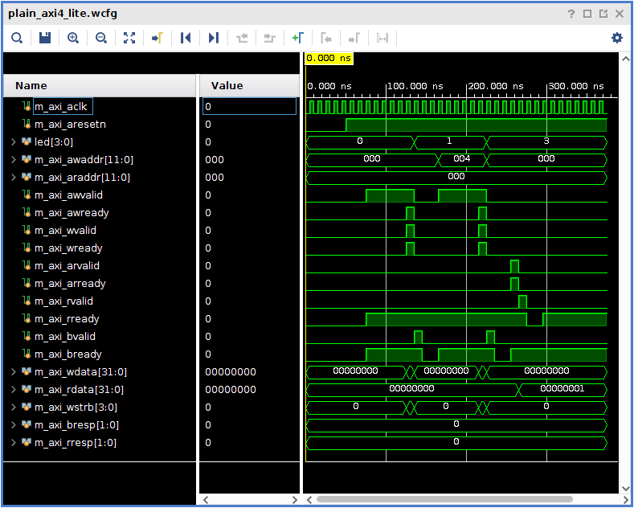
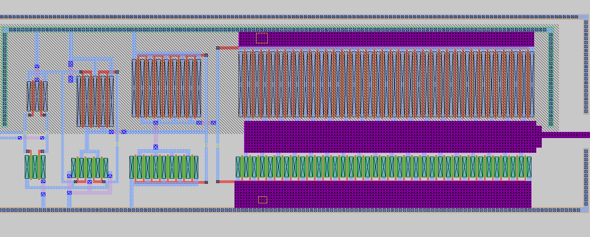
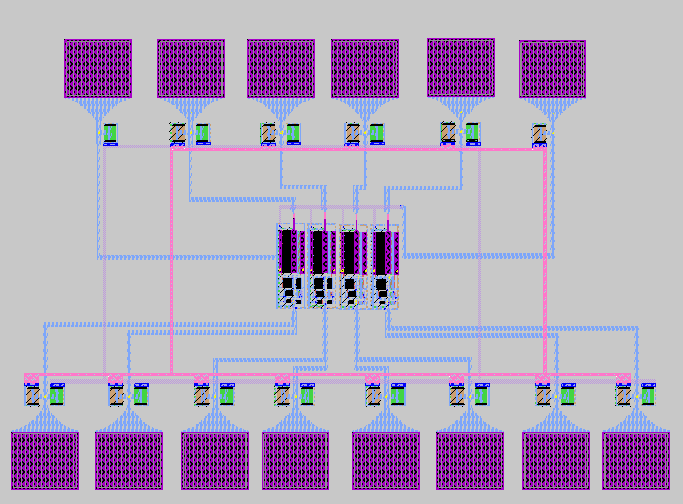
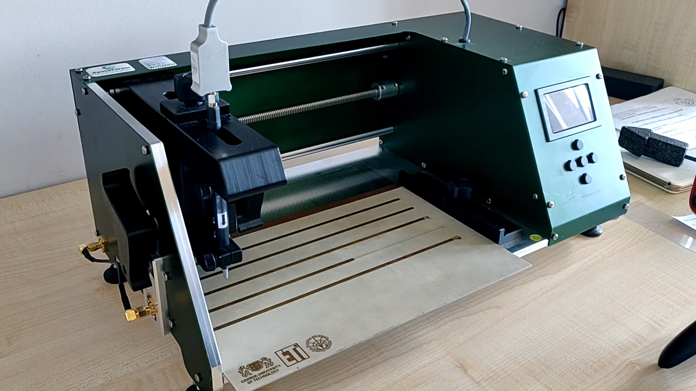
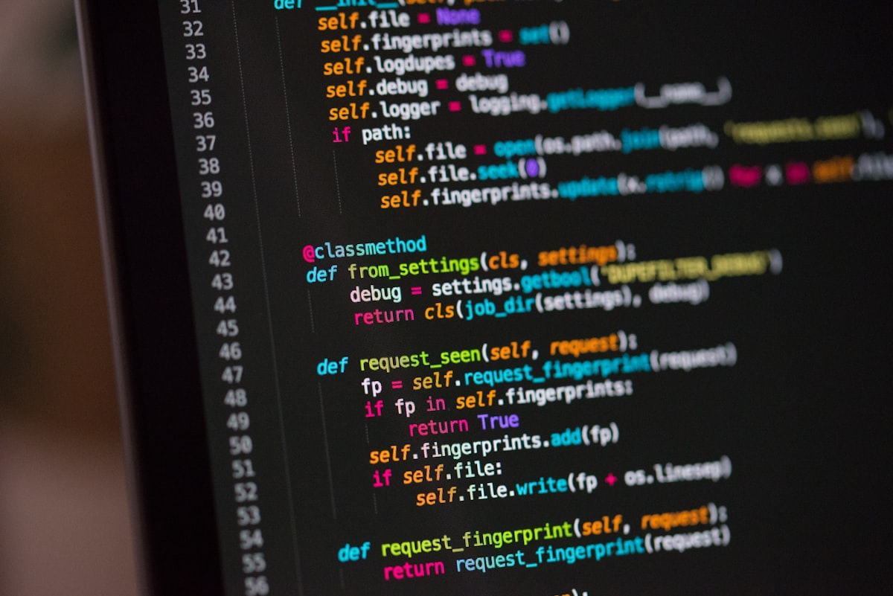
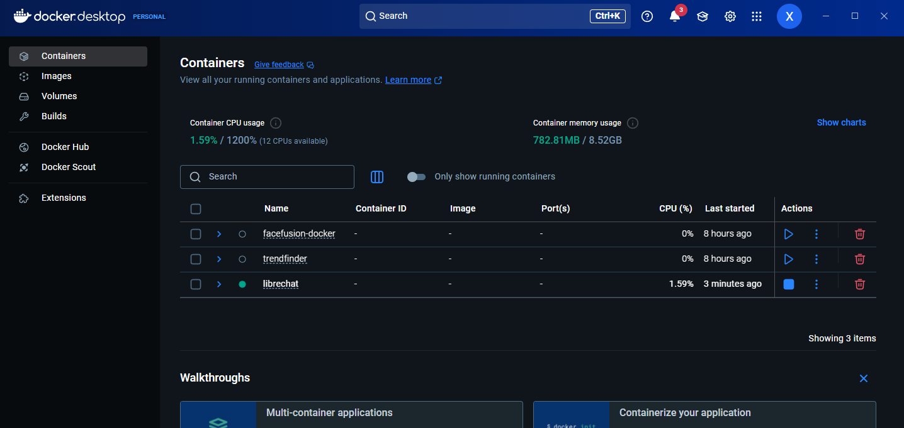
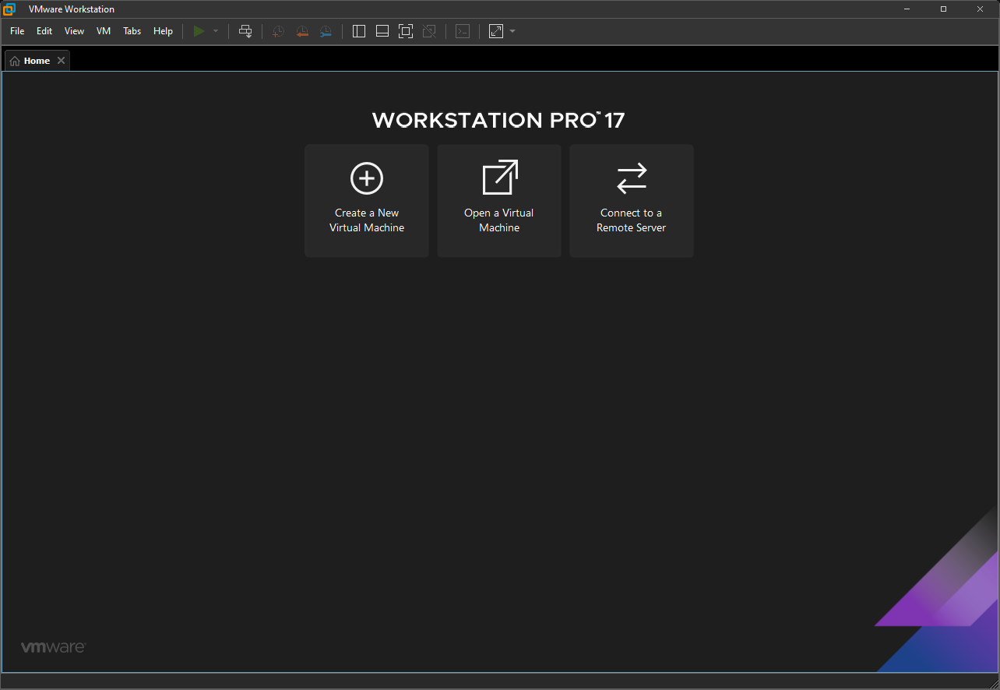

Core Strengths
From Circuits to Code





Practical knowledge of electronic components, operation of measuring instruments (confirmed by laboratories). Operation of software for design and electronic simulation: Micro-Cap, LTspice, Falstad, EAGLE, Vivado. Knowledge of control theory (system analysis, simulation, modeling).

Experience in programming (C++, JS) and implementation of various technical projects. Solid theoretical foundations in mathematics and physics, key in the technical fields.


Ability to automate tasks (AutoHotkey), proficient in Visual Studio Code. Management of virtual machines (VMware, VirtualBox) and configuration of operating systems.